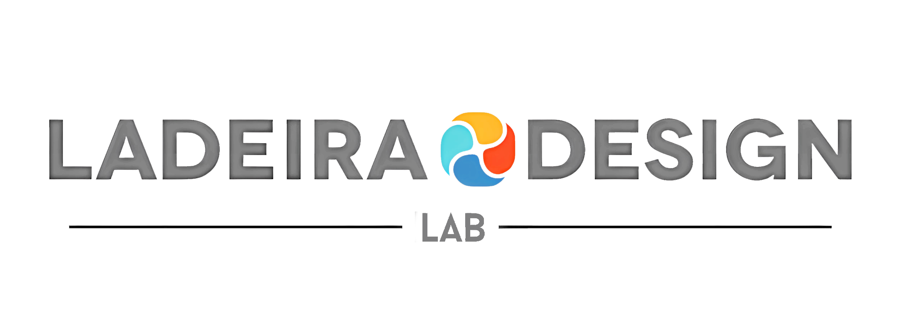

Back To Web Portfolio

Q: Are you able to print large objects out in 3d?
A: Just about anything can be printed, it will most likely be printed in linkable pieces if it is a larger object.
Q: What is the turnaround time for a project?
A: depending on the intricacies and technical aspects of the work, turnaround time can be anywhere from 3 days to 1 week.
Q: Will I be able to use your 3d assets in a game?
A: Yes I create my models using a multi-res modifier so there will be a low mid and high poly version of said model available.
Q: Do any of your works have resale royalties?
A: No, all models commissioned for clients retain the rights to do with them as they choose.